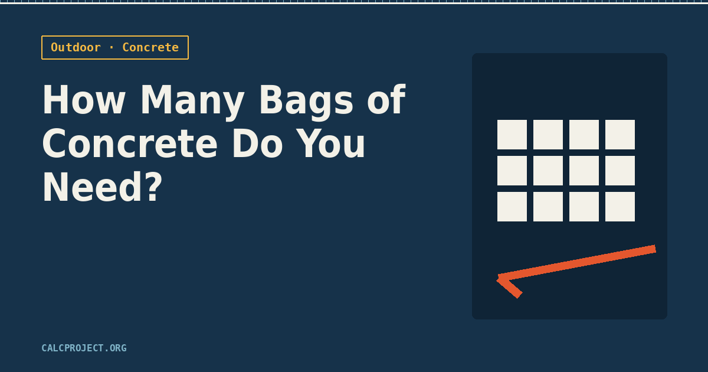

The concrete calculator gives you a clean number — cubic yards, and a bag count if you tell it your bag size. That number is right for the volume you entered, but a few real-world details change whether bags are even the right call, and how many you actually walk out of the store with.
Bags vs. a ready-mix truck
Bags make sense for small pours — a mailbox post footing, a stepping-stone path, a slab under 1 cubic yard or so. Past that, the math flips: mixing enough bags by hand for a full driveway or patio is slow, physically brutal, and hard to keep consistent from batch to batch. Most ready-mix suppliers have a minimum order (often 1 cubic yard), but for anything larger than a small patio, a truck is usually cheaper per yard and finishes in one consistent pour instead of twenty separate mixes.
60 lb vs. 80 lb bags
An 80 lb bag yields about 0.6 cubic feet of mixed concrete; a 60 lb bag yields about 0.45 cubic feet. The 80 lb bag is the better price per cubic foot, but it's also 80 lb of dead weight to lift, carry, and mix — for a solo project, plenty of people deliberately buy the smaller bags just to keep the job manageable. Both work fine structurally; the choice is really about your back, not the concrete.
Thickness matters more than most people plan for
A standard walkway or patio slab runs 4 inches thick. A driveway that vehicles will actually park or drive on needs 5-6 inches, and often reinforcement (see below) to handle that repeated load without cracking. Going thinner than 4 inches to save on bags is a false economy — it's the single most common reason a DIY slab cracks or settles unevenly within a couple of years.
Weather and cure time
Concrete needs temperatures consistently above 40°F for at least the first 48 hours to cure properly — pouring on a day that's warm but drops near freezing overnight can weaken the entire slab. On the other end, pouring in direct summer heat above 90°F causes the surface to dry too fast, leading to cracking; working early morning or covering fresh concrete with plastic sheeting helps. Either way, keep it damp and out of direct sun for the first few days if you can.
Reinforcement for anything bigger than a small pad
A small stepping pad or post footing usually doesn't need reinforcement. Anything larger — a driveway, a patio over roughly 8x8 ft, a walkway — benefits from welded wire mesh or rebar laid before the pour, plus control joints (intentional grooves cut every 8-10 ft) to guide where the slab cracks as it naturally expands and contracts, instead of cracking randomly across the surface.
Once you've settled on thickness and bag size, run the numbers with the concrete calculator — and if the total lands anywhere near a full cubic yard, it's worth calling a local supplier to compare a bag order against a small ready-mix delivery before you buy.